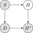
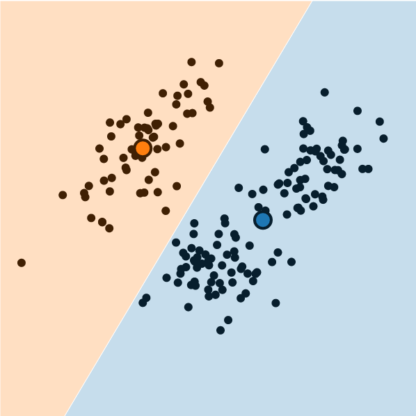
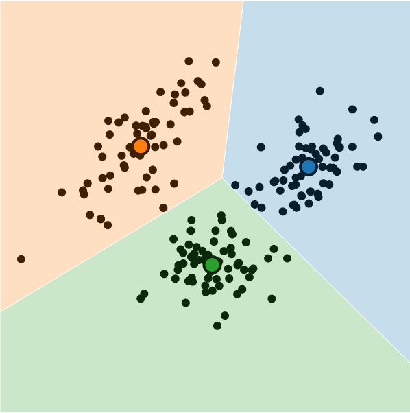

Week 9: Clustering Analysis
DSAN 5000: Data Science and Analytics
Section 02
Tuesday, October 24, 2023
From W06: Data Generating Process (DGP)
- You are a teacher trying to assess the causal impact of studying on homework scores
- Let \(S\) = hours of studying, \(H\) = homework score

- So far so good: we could estimate the relationship via (e.g.) regression
\[ h_i = \beta_0 + \beta_1 s_i + \varepsilon_i \]
My Dog Ate My Homework
- The issue: for some students \(h_i\) is missing, since their dog ate their homework
- Let \(D = \begin{cases}1 &\text{if dog ate homework} \\ 0 &\text{otherwise}\end{cases}\)
- This means we don’t observe \(H\) but \(H^* = \begin{cases} H &\text{if }D = 0 \\ \texttt{NA} &\text{otherwise}\end{cases}\)
- In the easy case, let’s say that dogs eat homework at random (i.e., without reference to \(S\) or \(H\)). Then we say \(H\) is “missing at random”. Our PGM now looks like:

My Dog Ate My Homework Because of Reasons

There are scarier alternatives, though! What if…
Dogs eat homework because their owner studied so much that the dog got ignored?

Dogs hate sloppy work, and eat bad homework that would have gotten a low score

Noisy homes (\(Z = 1\)) cause dogs to get agitated and eat homework more often, and students do worse

Why Do We Need To Think About DGPs?

Presumed DGP:

Actual DGP:

Relevance to Clustering
- Let \(\boldsymbol\mu_1 = (0.2, 0.8)^\top\), \(\boldsymbol\mu_2 = (0.8, 0.2)^\top\), \(\Sigma = \text{diag}(1/64)\), and \(\mathbf{X} = (X_1, X_2)\).
- \(X_1 \sim \boldsymbol{\mathcal{N}}_2(\boldsymbol\mu_1, \Sigma)\), \(X_2 \sim \boldsymbol{\mathcal{N}}_2(\boldsymbol\mu_2, \Sigma)\)
Code
library(tidyverse)
library(ggforce)
library(MASS)
library(patchwork)
N <- 50
Mu1 <- c(0.2, 0.8)
Mu2 <- c(0.8, 0.2)
sigma <- 1/24
# Data for concentric circles
circle_df <- tribble(
~x0, ~y0, ~r, ~Cluster, ~whichR,
Mu1[1], Mu1[2], sqrt(sigma), "C1", 1,
Mu2[1], Mu2[2], sqrt(sigma), "C2", 1,
Mu1[1], Mu1[2], 2 * sqrt(sigma), "C1", 2,
Mu2[1], Mu2[2], 2 * sqrt(sigma), "C2", 2,
Mu1[1], Mu1[2], 3 * sqrt(sigma), "C1", 3,
Mu2[1], Mu2[2], 3 * sqrt(sigma), "C2", 3
)
#print(circle_df)
Sigma <- matrix(c(sigma,0,0,sigma), nrow=2)
#print(Sigma)
x1_df <- as_tibble(mvrnorm(N, Mu1, Sigma))
x1_df <- x1_df |> mutate(
Cluster='C1'
)
x2_df <- as_tibble(mvrnorm(N, Mu2, Sigma))
x2_df <- x2_df |> mutate(
Cluster='C2'
)
cluster_df <- bind_rows(x1_df, x2_df)
cluster_df <- cluster_df |> rename(
x=V1, y=V2
)
known_plot <- ggplot(cluster_df) +
geom_point(
data = circle_df,
aes(x=x0, y=y0)
) +
geom_circle(
data = circle_df,
aes(x0=x0, y0=y0, r=r, fill=Cluster),
linewidth = g_linewidth,
alpha = 0.25
) +
geom_point(
data=cluster_df,
aes(x=x, y=y, fill=Cluster),
size = g_pointsize / 2,
shape = 21
) +
dsan_theme("full") +
coord_fixed() +
labs(
x = "x",
y = "y",
title = "Data with Known Clusters"
) +
scale_fill_manual(values=c(cbPalette[2], cbPalette[1], cbPalette[3], cbPalette[4])) +
scale_color_manual(values=c(cbPalette[1], cbPalette[2], cbPalette[3], cbPalette[4]))
unknown_plot <- ggplot(cluster_df) +
geom_point(
data=cluster_df,
aes(x=x, y=y),
size = g_pointsize / 2,
#shape = 21
) +
dsan_theme("full") +
coord_fixed() +
labs(
x = "x",
y = "y",
title = "Same Data with Unknown Clusters"
)
cluster_df |> write_csv("assets/cluster_data.csv")
known_plot + unknown_plot
Clusters as Latent Variables
- Recall the Hidden Markov Model (one of many examples):

Modeling the Latent Distribution
- This observed/latent distinction gives us a modeling framework for inferring “underlying” distributions from data!
- Let’s begin with an overly-simple model: only one cluster (all data drawn from a single normal distribution)

Probability that RV \(X_i\) takes on value \(\mathbf{v}\):
\[ \begin{align*} &\Pr(X_i = \mathbf{v} \mid \param{\boldsymbol\theta_\mathcal{D}}) = \varphi_2(\mathbf{v}; \param{\boldsymbol\mu}, \param{\mathbf{\Sigma}}) \end{align*} \]
where \(\varphi_2(\mathbf{v}; \boldsymbol\mu, \mathbf{\Sigma})\) is pdf of \(\boldsymbol{\mathcal{N}}_2(\boldsymbol\mu, \mathbf{\Sigma})\).
Let \(\mathbf{X} = (X_1, \ldots, X_N)\), \(\mathbf{V} = (\mathbf{v}_1, \ldots, \mathbf{v}_N)\)
Probability that RV \(\mathbf{X}\) takes on values \(\mathbf{V}\):
\[ \begin{align*} &\Pr(\mathbf{X} = \mathbf{V} \mid \param{\boldsymbol\theta_\mathcal{D}}) \\ &= \Pr(X_1 = \mathbf{v}_1 \mid \paramDist) \times \cdots \times \Pr(X_N = \mathbf{v}_N \mid \paramDist) \end{align*} \]
So How Do We Infer Latent Vars From Data?
If only we had some sort of method for estimating which values of our unknown parameters \(\paramDist\) are most likely to produce our observed data \(\mathbf{X}\)

The diagram on the previous slide gave us an equation
\[ \begin{align*} \Pr(\mathbf{X} = \mathbf{V} \mid \param{\boldsymbol\theta_\mathcal{D}}) = \Pr(X_1 = \mathbf{v}_1 \mid \paramDist) \times \cdots \times \Pr(X_N = \mathbf{v}_N \mid \paramDist) \end{align*} \]
And we know that, when we consider the data as given and view this probability as a function of the parameters, we write it as
\[ \begin{align*} \lik(\mathbf{X} = \mathbf{V} \mid \param{\boldsymbol\theta_\mathcal{D}}) = \lik(X_1 = \mathbf{v}_1 \mid \paramDist) \times \cdots \times \lik(X_N = \mathbf{v}_N \mid \paramDist) \end{align*} \]
We want to find the most likely \(\paramDist\), that is, \(\boldsymbol\theta^*_\mathcal{D} = \argmax_{\paramDist}\mathcal{L}(\mathbf{X} = \mathbf{V} \mid \paramDist)\)
This value \(\boldsymbol\theta^*_\mathcal{D}\) is called the Maximum Likelihood Estimate of \(\paramDist\), and is easy to find using calculus tricks1
Unsupervised Clustering: Heuristics
| Heuristic 1 | Heuristic 2 |
|---|---|
| Points in same cluster should be similar | Points in different clusters should be dissimilar |
You could take these two heuristics, formalize them, and derive the rest of lecture 😉

Image from Introduction to Machine Learning, University of Washington (2012)
Hierarchical Clustering
- If our task is to partition, we’re done!
- If our task is to infer a hierarchy, we can also think about a spectrum of coarse-grained to fine-grained clusterings:


Hierarchical Clustering \(\rightarrow\) Multilevel Modeling
- Extremely powerful modeling tool for statistical inference!
- Learning about eagles \(\implies\) learning about birds
- Surveying DSAN 5000 students \(\implies\) Georgetown students
- We can pool information from US states into national estimates
- And, when we compute averages, we can take into account our relative certainty/uncertainty about units at each level (read more here)
Image from Gelman (2009)

In Practice


What is K-Means Clustering?
- Operationalizes our two heuristics by simultaneously:
- Maximizing within-cluster similarity
- Minimizing between-cluster similarity



Hyperparameter Tuning: More Heuristics
- Inertia: A measure of how “well-clustered” a dataset is
- Sum of squared distances of samples to their closest cluster center
- A good model is one with low inertia and low \(K\) (tradeoff, akin to bias-variance)
- Elbow Method: Find the \(K\) value after which decrease in inertia begins to slow →